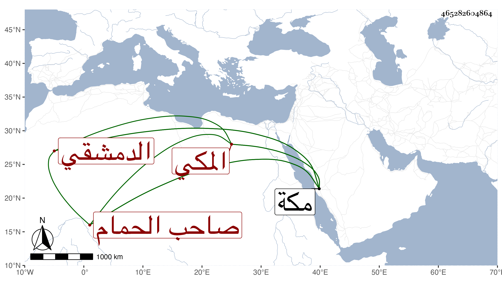

0902Sakhawi.DawLamic.ITO20230111-ara1.EIS1600.465282604864
Biography ID: 465282604864
694
محمد بن محمد بن محمد بن قلبة بفتحات الشمس الدمشقي ثم المكي صاحب الحمام الشهير بمكة والمتكلم على البيمارستان بها ويعرف بابن قلبة . أثنى عليه عندي الواعظ يحيى الغزي ووصفه بأبي الفقراء والأيتام وخاتمة سماسرة الخير وأنه كان ذا مال ليس بالكثير بل بورك له فيه ولكنه لما مات وجدت عليه ديون طابقها مخلفه سواء وهو ألف دينار . مات بمكة في ذي القعدة سنة إحدى وسبعين وتكلم على البيمارستان بعده إبرهيم العراقي .
